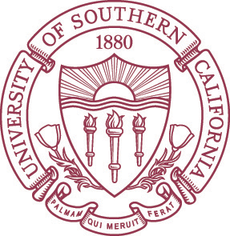

Shane Miller
325 W Adams Blvd. Apt. 4132
Los Angeles, CA 90007
Objective

A dedicated finance major at USC seeking to leverage academic excellence and a passion for finance to secure a challenging internship in investment banking. Aiming to contribute analytical skills and a strong work ething to support the firm's financial objectives.
Education
University of Sourthern California, Marshall School of Business, Los Angeles, CAClass of May 2024
- B.S. Business Administration (emphasis in Finance) STEM Designated
Experience
Financial AnalystAugust 2022 - Present
Marshall Student Business Community
Assisted in financial operations for the Marshall Ball and profited $4,000 in order to hold similar club activities.
Provided one-on-one guidance to junior members in the financial division which manages the club's finances.
Successfully managed the financial resources and spearheaded fundraising initiatives, ensuring the club's sustainability and enabling the execution of key activities and projects.
Junior Broker / AnalystJune - August 2023
Sands Investment Group
Currently centralizing all company investment properties and current clients into an Excel spreadsheet utilizing AI
technology to update real-time with REthink, and will optimize the broker's ability to gather data.
Inspected real estate investment trust 10k statements and performed a comprehensive financial analysis to evaluate
key performance indicators, identify trends, and assess investment opportunities.
Achieved an impressive 3rd place in a nationwide case competition, competing against numerous offices across the country, showcasing strong analytical and problem-solving skills in a high-pressure, collaborative environment.
Team Leader January - May 2023
Transfer International Experience
Accepted into a competitive academic program to learn about international business and economics.
Lead a team in a business analysis project for Fun Academy prior to traveling on a ten-day business trip to
Helsinki, Finland to tour companies and meet with executives at Nokia, Kide Science, and Fun Academy.
Developed a comprehensive PowerPoint presentation, incorporating market research, financial data, and strategic insights, to facilitate effective communication and investor engagement, ultimately contributing to the growth and funding success of a dynamic startup company.
Skills

Programming Languages
- R Script
- HTML, CSS
- Python

Finance Skills
- Valuation
- Discount Cash Flow Modeling (DCF)
- Comparable Company Analysis (CCA)
- Data Analysis

Additional Skills
- Microsoft Office Suite
- Project Management
- Pitchbook Presentation